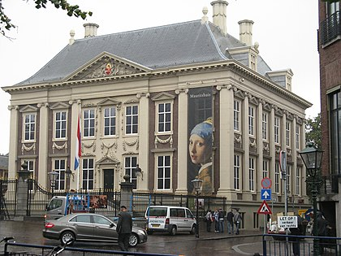
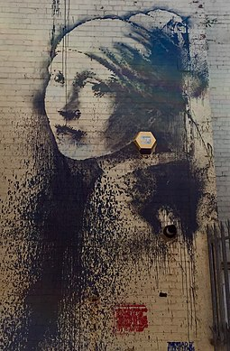

Girl With A Pearl Earring (Dutch: Meisje met de parel) is an oil painting by Dutch Golden Age painter Johannes Vermeer, dated c. 1665. Going by various names over the centuries, it became known by its present title
towards the end of the 20th century after the earring worn by the girl portrayed there. The work has been in the collection of the Mauritshuis in The Hague since 1902 and has been the subject of various literary and cinematic treatments.
Description
The painting is a tronie, the Dutch 17th-century description of a "head" that was not meant to be a portrait. It depicts a European girl wearing "exotic dress", an "oriental turban", and what appears to be a very large pearl as an earring. The subject of the painting is unknown, with it either being possible that she was a real model, or that Vermeer created a more generalised and mysterious woman, perhaps representing a Sibyl or biblical figure.There has been speculation that she is the artist's eldest daughter, Maria, though this has been dismissed as an anachronism by some art historians.
The work is oil on canvas and is 44.5 cm (17.5 in) high and 39 cm (15 in) wide. It is signed "IVMeer" but not dated. It is estimated to have been painted around 1665.
After the most recent restoration of the painting in 1994, the subtle colour scheme and the intimacy of the girl's gaze toward the viewer have been greatly enhanced. During the restoration, it was discovered that the dark background, today somewhat mottled, was originally a deep enamel-like green. This effect was produced by applying a thin transparent layer of paint—a glaze—over the black background seen now. However, the two organic pigments of the green glaze, indigo and weld, have faded. In 2014, Dutch astrophysicist Vincent Icke [nl] raised doubts about the material of the earring and argued that it looks more like polished tin than pearl on the grounds of the specular reflection, the pear shape and the large size of the earring.
Ownership and display

On the advice of Victor de Stuers, who for years tried to prevent Vermeer's rare works from being sold to parties abroad, Arnoldus Andries des Tombe purchased the work at an auction in The Hague in 1881, for only two guilders plus thirty cents buyer's premium (around €24 at current purchasing power). At the time, it was in poor condition, with parts of the paint layer having become detached. Des Tombe had no heirs and by a bequest donated this and other paintings to the Mauritshuis in 1902.
The painting has since been widely exhibited about the world until in 2014 the Mauritshuis took the decision that it should not leave the museum in the future. By that time, as a result of its promotion, a CNN survey named it one of the world's most recognizable paintings.
Painting title
The painting has gone under a number of titles in various countries over the centuries. Originally it may have been one of the two tronies "painted in the Turkish fashion" (Twee tronijnen geschildert op sijn Turx) recorded in the inventory at the time of Vermeer’s death. It may later have been the work appearing in the catalogue to a 1696 sale of painting in Amsterdam, where it is described as a "Portrait in Antique Costume, uncommonly artistic" (Een Tronie in Antique Klederen, ongemeen konstig).
After the bequest to the Mauritshuis, the painting became known as Girl with a Turban (Meisje met tulband) and it was noted of its original description in the 1675 inventory that the turban had become a fashion accessory of some fascination during the period of European wars against the Turks.By 1995, the title Girl with a Pearl (Meisje met de parel) was considered more appropriate. Pearls, in fact, figure in 21 of Vermeer's pictures, including very prominently in Woman with a Pearl Necklace. Earrings alone are also featured in A Lady Writing a Letter, Study of a Young Woman, Girl with a Red Hat, and Girl with a Flute. Similarly shaped ear-pieces were used as convincing accessories in 20th-century fakes that were briefly attributed to Vermeer, such as Young Woman with a Blue Hat, Smiling Girl and The Lace Maker.
Generally, the English title of the painting was simply Head of a Young Girl, although it was sometimes known as The Pearl. One critic explained that this name was given, not just from the detail of the earring, but because the figure glows with an inner radiance against the dark background.
Cultural impact
Some of the first literary treatments of the painting were in poems. For Yann Lovelock in his sestina, "Vermeer’s Head of a Girl", it is the occasion for exploring the interplay between imagined beauty interpreted on canvas and living experience.[31] W. S. Di Piero reimagined how the "Girl with Pearl Earring by Johannes Vermeer" might look in the modern setting of Haight Street in San Francisco,[32] while Marilyn Chandler McEntyre commented on the girl's private, self-possessed personality.[33] There have also been three fictional appearances. As La ragazza col turbante (Girl with a Turban, 1986), it features as the general title of Marta Morazzoni’s collection of five short novellas set in the Baroque era. In the course of the title story, a Dutch art dealer sells Vermeer’s painting to an eccentric Dane in the year 1658. Indifferent to women in real life, the two men can only respond to the idealization of the feminine in art.In the following decade, Iain McClure's 1996 BBC radio play 'Paint Her Well', takes inspiration from Vermeer's painting (and his life) in its story of a king searching for a woman he has painted, having dreamt about her. The mysterious young woman, ethereally beautiful, her large pearl earring catching light from the left, is otherwise in darkness. Tracy Chevalier's 1999 historical novel Girl with a Pearl Earring fictionalized the circumstances of the painting's creation. There, Vermeer becomes close to a servant whom he uses as an assistant and has sit for him as a model while wearing his wife's earrings. The novel was adapted into a 2003 film of the same name and a 2008 play. The painting also appeared in the 2007 film St Trinian's, where a group of unruly schoolgirls steal it to raise funds to save their school. At that period, too, fellow artists made iconic use of Vermeer's painting. Ethiopian American Awol Erizku recreated it as a print in 2009, centering a young black woman and replacing the pearl earring with bamboo earrings as a commentary on the lack of black figures in museums and galleries. His piece is titled Girl with a Bamboo Earring.And in 2014 the English street artist Banksy reproduced the painting as a mural in Bristol, incorporating an alarm box in place of the pearl earring and calling the artwork Girl with a Pierced Eardrum. A climate protestor representing the Just Stop Oil campaign attempted to glue his head to the glass protecting the painting in October 2022, and was covered in tomato soup by another protestor.The protest did not damage the painting, and three people were arrested for public violence against goods.